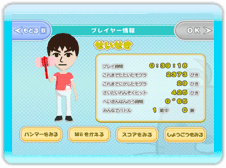
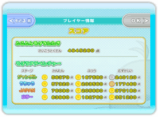
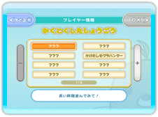

● 成績を見る
モードセレクト画面で「プレイヤー情報」を選ぶと、成績確認画面が表示されます。

● スコアを見る
成績確認画面で「スコアをみる」を選ぶと、得点確認画面が表示されます。
「もどる」を押すと、成績確認画面に戻ります。

● 称号を見る
成績確認画面で「しょうごうをみる」を選ぶと、称号確認画面が表示されます。
今までに獲得した称号を選ぶと、称号の説明が表示されます。まだ獲得していない称号を選ぶと、その称号を獲得するためのヒントを見ることができます。
「もどる」を押すと、成績確認画面に戻ります。
● Miiを変更する
成績確認画面で「Miiをかえる」を選ぶと、プレイヤーのMiiを変更することができます。あらかじめ用意されたMiiを使用すると、Wi-Fiランキングで登録される名前が「no name」になります。
● ハンマーを見る
成績確認画面で「ハンマーをみる」を選ぶと、持っているハンマーを確認することができます。